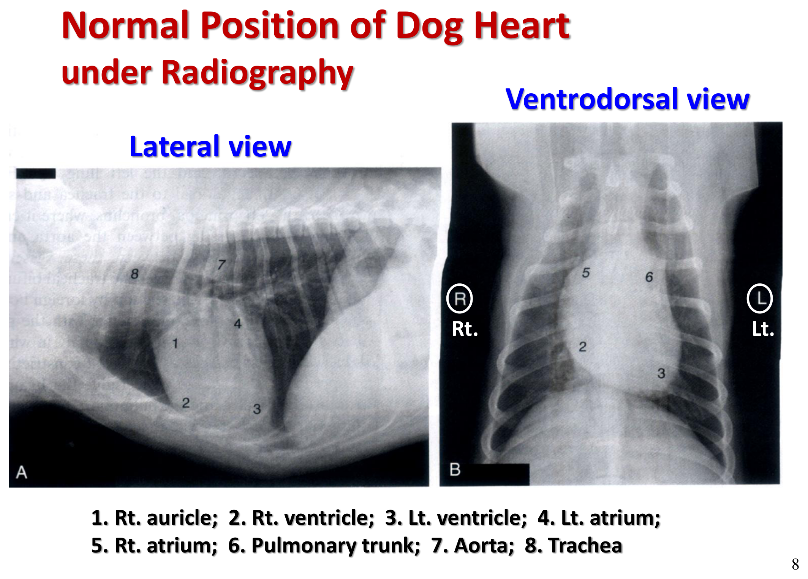
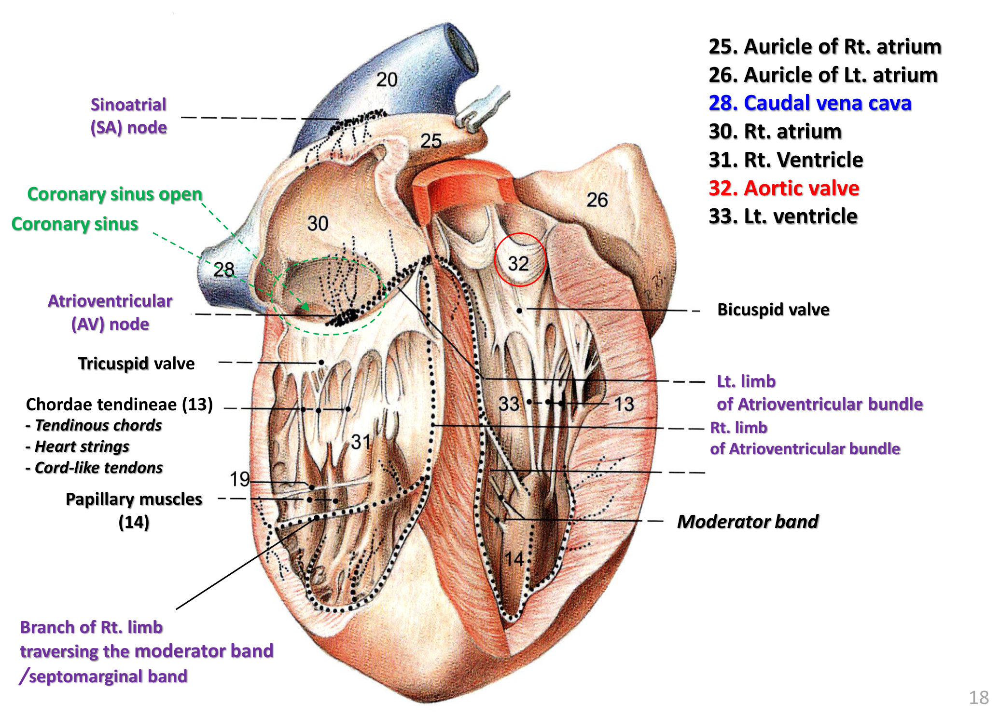
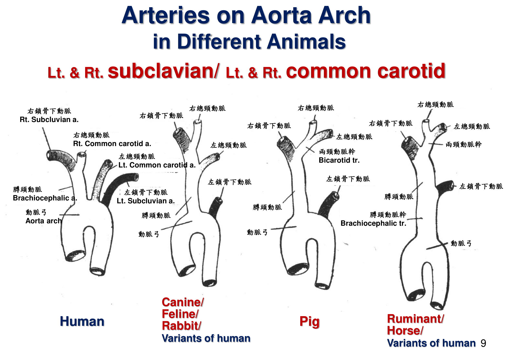
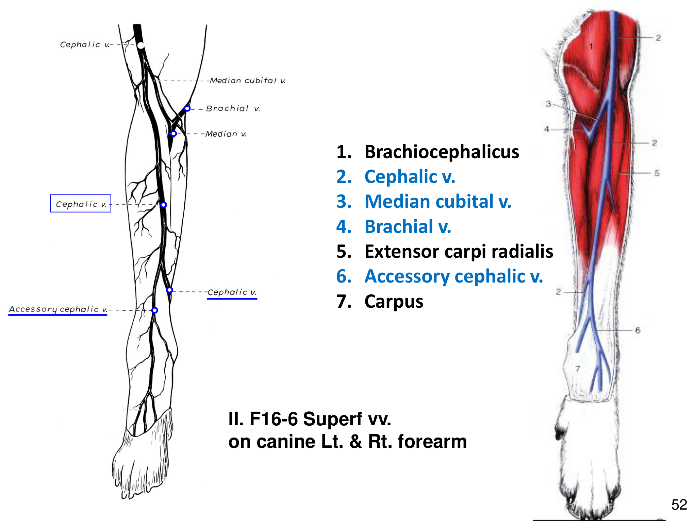
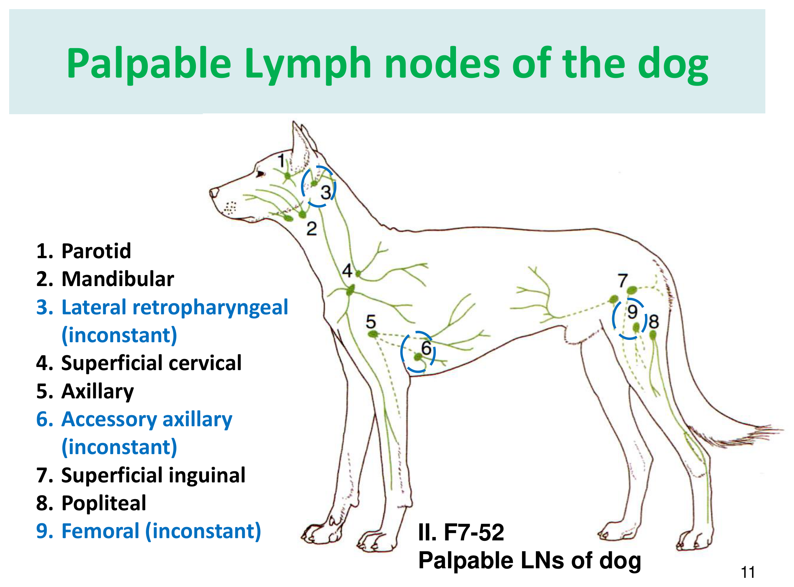
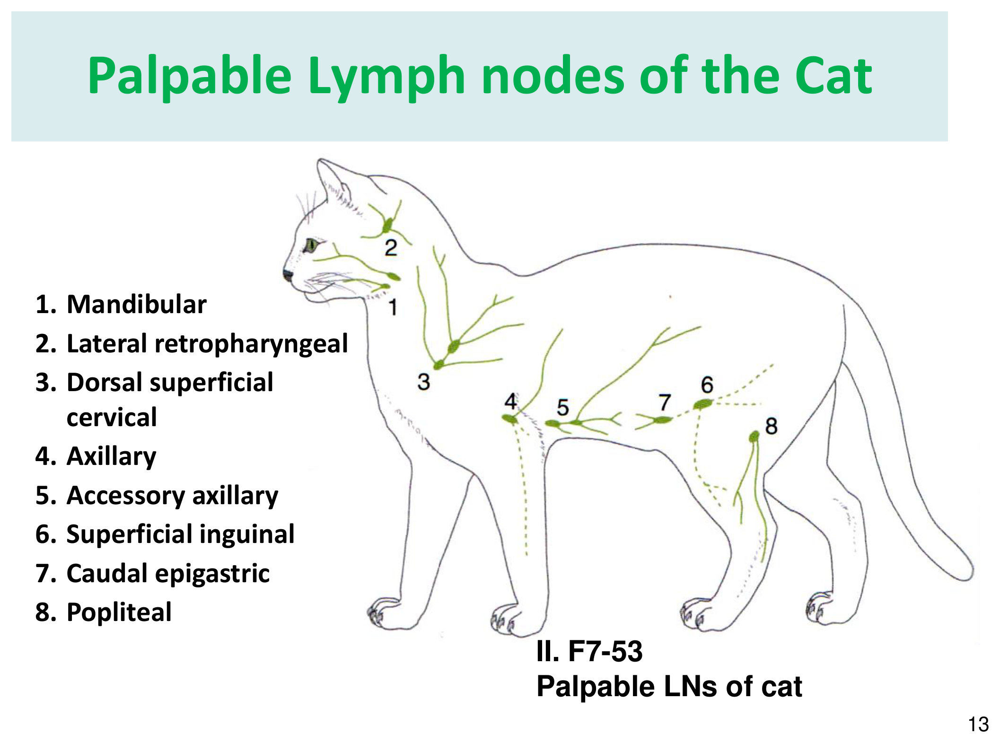

重點摘要
- 犬心臟的體表定位是判讀胸腔 X 光的基礎：心臟位於第 3/4～6/7 肋間，主動脈開口約在第 3 肋、肺動脈幹開口約在第 4 肋；X 光上需能辨認左右心房心室、肺動脈幹、主動脈、氣管的相對位置（側位＋腹背位），是心臟評估的第一步。
- 心臟瓣膜與心室壁的「左側較強」規則，全部源自體循環壓力遠高於肺循環：主動脈瓣較肺動脈瓣強厚、二尖瓣較三尖瓣強厚、左心室乳頭肌較右心室強厚、左心室壁厚度是右心室的三至四倍——這條規則可以直接推論回「左心負責體循環（高壓）、右心負責肺循環（低壓）」的生理基礎。
- 心臟傳導系統的路徑是竇房結（SA node）→ 房室結（AV node）→ 房室束（His bundle）→ 左右分支 → 浦金氏纖維；交感神經興奮心跳（正變時、正變傳導、正變力），副交感神經（迷走神經）僅拮抗竇房結與心房肌，不直接分布到心室肌——這解釋了為什麼迷走張力過高主要造成心搏過緩或房室傳導阻滯，而非直接抑制心室收縮力。
- 犬貓的冠狀循環以左冠狀動脈為主：左冠狀動脈的室間枝供應大部分室中膈，且反芻動物、貓、犬的右室間枝是由左冠狀動脈迴旋枝延伸而來（馬與豬則是由右冠狀動脈直接發出）——這項物種差異是比較解剖學的常見考點。
- 主動脈弓分支模式有明確的物種差異：犬貓兔（人的變異型）是膊頭動脈幹發出右鎖骨下動脈＋雙側總頸動脈，左鎖骨下動脈則直接由主動脈弓單獨發出；反芻動物與馬則是四條血管（雙側總頸、雙側鎖骨下）全部由單一膊頭動脈幹發出——辨認這張圖是動物解剖學考試的經典題型。
- 腹主動脈內臟枝依「前腸／中腸／後腸」供應範圍分三段記憶最有效率：腹腔動脈（前腸：胃、肝、脾）、前腸繫膜動脈（中腸：大部分小腸與大腸）、後腸繫膜動脈（後腸：降結腸、直腸），對應臨床上腸道缺血、腸繫膜血栓的區域定位邏輯。
- 頭靜脈（前肢）與內／外側隱靜脈（後肢）是臨床最常用的周邊採血與留置導管部位，頸靜脈則是大量採血與中央靜脈導管的首選；複習靜脈系統時建議直接對照臨床操作部位記憶，比死背血管分支順序更有效率。
- 觸診淋巴結是理學檢查核心，「五大觸診淋巴結」須每次理學檢查都檢查：下頜淋巴結、淺頸（肩胛前）淋巴結、腋下淋巴結、淺腹股溝淋巴結、膕窩淋巴結；犬另有腮腺、副腋、股淋巴結（皆不恆定存在），貓則以尾側上腹淋巴結取代犬的股淋巴結位置——物種差異也是考試重點。
心臟位置與大血管開口 Position of the Heart
心臟位置的體表定位是聽診、觸診心尖搏動與判讀胸腔 X 光的共同基礎，物種間略有差異。
犬心臟位置
位於第 3/4～6/7 肋間；食道位於背側、胸骨位於腹側、胸腺位於前方、橫膈位於後方，左右肺分居兩側。
主動脈開口約位於第 3 肋；肺動脈幹開口約位於第 4 肋。
馬、牛心臟位置比較
| 構造 | 馬 | 牛 |
|---|---|---|
| 心底 Fundus | 第 2–6 肋之間 | 第 2–6 肋之間 |
| 心尖 Apex | 胸骨劍狀軟骨 | 第 6 肋肋軟骨 |
| 右房室口 | 第 4 肋間 | 第 3 肋間 |
| 左房室口 | 第 4 肋與第 5 肋間之間 | 第 4 肋間與第 5 肋之間 |
| 主動脈開口 | 第 4 肋間 | 第 4 肋 |
| 肺動脈幹開口 | 第 3 肋間與第 4 肋之間 | 第 3 肋間與第 4 肋之間 |

心臟表面標記
- 心尖 Apex／心底 Fundus（前面上端寬大）
- 左縱溝 Lt. longitudinal groove（又稱前／腹室間溝）：左冠狀動脈下行枝與大心／左冠狀靜脈通過
- 右縱溝 Rt. longitudinal groove（又稱後／背室間溝）：右冠狀動脈分枝通過
- 冠狀溝 Coronary groove：環繞心臟上部的環狀溝，冠狀動靜脈通過，將心臟分為上（心房）下（心室）兩部
左右縱溝在外形上將心臟分為左右兩半，與內部的房中膈、室中膈位置一致。
心臟四腔與瓣膜構造 Chambers & Valves of the Heart
心臟內部以房中膈、室中膈分為左右兩側，各再分心房、心室，共四腔；瓣膜構造與左右兩側的「強厚程度差異」是本節最重要的比較記憶。
房中膈與室中膈
左右心房之間為房中膈（Atrial septum），其上有深陷的卵圓窩（Oval fossa）——為胎兒心臟卵圓孔（foramen ovale）的遺跡；左右心室之間為室中膈（Ventricular septum）。
右心房與右房室口
外部隆起為右心耳；前壁有前腔靜脈口、後壁有後腔靜脈口（開口膨大處為靜脈竇）；前後腔靜脈口間偶有奇靜脈開口；房室口與後腔靜脈口間有冠狀竇口（冠狀竇入口，具冠狀竇瓣）；心耳內有櫛狀肌。承受前、後腔靜脈與冠狀竇來的靜脈血。
通口周圍有三尖瓣（Tricuspid valve），經腱索接到室中膈上的乳頭肌，防止右心室血液逆流至右心房。
右心室
頂部為肺動脈口，附有前、左、右三片半月瓣，稱肺動脈瓣（Pulmonary valve），周邊凹陷形成肺動脈竇。有三條乳頭肌凸入內腔，頂端經約 4–8 條腱索連接三尖瓣。另有一條薄而軟的調節束（Moderator band，又稱心橫肌／緣膈柱）橫跨心室內腔，可避免心室過度擴大，也是傳導系統右分支的通道之一。
左心房與左房室口
左側外前部隆凸成左心耳，內有櫛狀肌；左右兩側各有 2–3 個肺靜脈開口；房中膈於卵圓窩相當處有淺窩，週緣有半月瓣狀中膈瓣（胎心卵圓孔瓣遺跡）。
較右房室口小，瓣膜為二尖瓣／僧帽瓣（Bicuspid／Mitral valve），有 6–8 條腱索接到乳頭肌，較三尖瓣強厚。
左心室
左心室壁厚度約為右心室壁的三至四倍，內腔因此狹窄。右上方為主動脈口，邊緣有左、右、後（中膈）三個半月瓣，稱主動脈瓣（Aortic valve）；瓣膜附著處向外隆凸形成主動脈竇，其中左、右主動脈竇部各有左、右冠狀動脈的出口。左心室壁有兩條乳頭肌凸入心室腔，尖端以腱索連接二尖瓣下方。
大動脈瓣較肺動脈瓣強厚；左心室乳頭肌較右心室者強厚；二尖瓣較三尖瓣強厚；心室壁（三層）較心房壁（二層）厚；左心室壁較右心室壁厚——全部源自左心負責體循環（高壓）、右心負責肺循環（低壓）的生理需求差異。

心壁三層構造
| 層次 | 說明 |
|---|---|
| 心外膜 Epicardium | 又稱心包膜臟層，與漿膜性心包膜之間形成心包腔 |
| 心肌 Myocardium | 橫紋不隨意肌 |
| 心內膜 Endocardium | 心肌內面覆蓋心內瓣膜、腱索及肉柱（Trabeculae carneae） |
心包膜 Pericardium
包裹心臟及大血管根部的膜囊，分兩層：纖維心包（外層）與漿膜心包（內層，再分壁層與臟層，臟層即心外膜）；壁層與臟層間形成心包腔，內含心包液。
防止心臟過度擴張
潤滑、減少摩擦
保持心臟位置
收縮時藉吸力協助舒張
心臟骨骼 Cardiac Skeleton (Ossa Cordis)
最常見於牛，馬也可能有；幼年不明顯、成年後逐漸顯現（外觀類似纖維化的肌肉）。是心臟瓣膜附著於心肌的基礎，心肌肌束也會鉗入其中；可避免瓣膜承受過大負載，也作為電流絕緣體，避免電流由心房直接傳導至心室（迫使電訊號必須經房室結傳導）。
心臟傳導系統與神經支配 Conduction System & Innervation
心臟本身具有自律性傳導系統，同時受自主神經系統調節速率與強度。
傳導路徑
竇房結為正常節律點（pacemaker），是整個系統的刺激生成中樞。
自主神經支配
| 神經 | 起源 | 作用 | 分布範圍 |
|---|---|---|---|
| 交感神經 | 頸胸神經節、中頸神經節 | 興奮時：正變時效應（心跳加快）、正變傳導效應（傳導加快）、正變力效應（收縮力增強） | 竇房結、房室結、心室肌 |
| 副交感神經（迷走神經） | 迷走神經之心臟枝或返喉神經枝 | 興奮時拮抗交感神經效應（抑制變時、變傳導、變力效應） | 竇房結、心房肌（不含心室肌） |
副交感（迷走）神經只分布到竇房結與心房肌，不直接分布到心室肌；這解釋了為什麼迷走張力過高（如嘔吐、疼痛刺激迷走反射）主要造成心搏過緩或房室傳導延遲／阻滯，而不會直接抑制心室收縮力——心室收縮力主要仍受交感神經與循環中兒茶酚胺調控。
冠狀循環 Coronary Circulation
心臟本身的血液供應來自左右冠狀動脈，犬的冠狀循環模式以左冠狀動脈為主，供應範圍最廣。
左冠狀動脈 Lt. Coronary a.
通常較大，由左心耳與肺動脈之間經過，但很快分支：
- 下行枝／前室間枝／左室間枝（沿左縱溝）：再分左心室分枝（較長較大，通常 7 條）、右心室分枝（約 5 條，較小，與右冠狀動脈分枝吻合）、中膈分枝（進入室中膈）
- 迴旋枝（沿冠狀溝向後延伸）：終止於右室間溝上緣（馬、豬），或形成右室間枝（反芻動物、貓、犬）
※ 犬有 5 個主要分支，但不同個體間數量差異很大；分枝大多很短，最大的分枝即右室間枝。
右冠狀動脈 Rt. Coronary a.
位於右心耳與肺動脈之間；迴旋枝沿右冠狀溝（反芻動物、貓、犬僅有此分枝）；約 20% 的犬會有一條很短的副右冠狀動脈，同樣源自主動脈竇；犬右冠狀動脈一般有 4–9 條分支，分佈於右心室壁外，多不長。下行枝／後室間枝／右室間枝僅存在於馬、豬。
反芻動物、貓、犬的右室間枝來自左冠狀動脈的迴旋枝延伸而成；馬與豬則是由右冠狀動脈直接發出獨立的下行枝／後室間枝。這代表犬貓的心臟以左冠狀動脈供應大部分室中膈與右室游離壁，是比較解剖學的重要差異，也常出現在考題中。
心臟靜脈系統
| 靜脈 | 又稱 | 路徑 |
|---|---|---|
| 大心靜脈 Great cardiac v. | 左冠狀靜脈 | 心尖 → 左縱溝 → 左冠狀溝 → 冠狀竇 → 右心房 |
| 中心靜脈 Middle cardiac v. | 右冠狀靜脈 | 心尖 → 右縱溝 → 後腔靜脈基底部 → 冠狀竇 → 右心房 |
| 小心靜脈 Minimal/Rt. cardiac v. | — | 右心房、室壁小枝（3–5 條）→ 右冠狀溝 → 冠狀竇 → 右心房 |
主動脈總覽與主動脈弓分支 Aorta Overview & Aortic Arch Branches
動脈系統從主動脈開始，依「升主動脈 → 主動脈弓 → 降主動脈（胸主動脈 → 腹主動脈）」的順序向全身分佈；主動脈弓分支模式有明確的物種差異，是比較解剖學的經典考點。
動脈壁的三層構造
| 層次 | 組成 |
|---|---|
| 內膜 Tunica intima | 內皮細胞＋內彈性膜——動脈硬化病變通常始於此層 |
| 中膜 Tunica media | 最厚、變化最大的一層；此層結構差異將動脈分為大、中、小三類 |
| 外膜 Tunica adventitia | 含脈管小血管（Vasa vasorum），供應大血管本身（如主動脈）的血液 |
側枝循環 Collateral Circulation
沒有有效的側枝吻合，阻塞後該區域直接梗死（如視網膜血管、部分腦皮質血管）。
雖有吻合但供血量不足以應付需求（如馬四肢的動脈間吻合），日常足夠但高需求時仍可能缺血。
主動脈路徑總覽
主動脈弓分支的物種差異重要

| 物種 | 主動脈弓分支模式 |
|---|---|
| 犬／貓／兔 | 膊頭動脈幹 → 右鎖骨下動脈＋右總頸動脈＋左總頸動脈；左鎖骨下動脈單獨由主動脈弓發出 |
| 豬／反芻動物／馬 | 單一膊頭動脈幹 → 右鎖骨下動脈＋兩頸動脈幹（再分左右總頸動脈）＋左鎖骨下動脈，全部四條血管皆源自同一膊頭動脈幹 |
頭頸部與前肢動脈 Arteries of Head, Neck & Forelimb
膊頭動脈幹的分支負責供應頭頸部（總頸動脈系統）與前肢（鎖骨下動脈系統），兩系統在解剖實習台上是最常一起解剖辨認的區域。
總頸動脈 Common Carotid a. 分支
總頸動脈沿氣管（右）或食道（左）腹側面上行，沿途發出後甲狀腺動脈（食道枝）、前甲狀腺動脈（甲狀腺枝、咽頭枝、環甲枝、肌枝），過甲狀軟骨後方分為內頸動脈與外頸動脈兩終支。
分佈至大腦及腦下方，參與構成腦動脈輪（Arterial circle of brain）：後頸間枝、後交通枝、前腦下腺動脈、中大腦動脈、前大腦動脈、內眼動脈、內篩動脈。
主要分佈至頭部淺層：枕動脈、前喉動脈、上咽動脈、舌動脈、面動脈、後耳殼動脈、淺側頭動脈，終支為上顎動脈（最大終支）。
鎖骨下動脈 Subclavian a. 分支
鎖骨下動脈沿第一肋前緣下行進入前肢，於腋下改名為腋窩動脈；沿途主要分支：
| 分支 | 路徑／分佈 |
|---|---|
| 椎動脈 Vertebral a.（第一分支） | 於第一肋間分出，上行穿過第六至第一頸椎橫突孔，於寰椎翼前外面與枕動脈吻合；分佈頸部諸肌；脊髓枝經各頸椎椎間孔分佈脊髓被膜（背枝）與脊髓白質／灰質（腹枝匯成腹脊動脈） |
| 肋頸動脈 Costocervical a.（肋頸幹） | 分四枝：第一肋間動脈（心包膜、胸腺）、背肩胛動脈（腹鋸肌胸壁部）、深頸動脈（與椎動脈背肌枝、枕動脈下行枝吻合，分佈頭頸與前胸背側肌肉） |
| 內胸動脈 Internal thoracic a. | 分佈胸骨區域 |
| 淺頸動脈 Superficial cervical a. | 分佈頸部淺層 |
鎖骨下動脈續行為腋窩動脈 Axillary a.，再延續為肱（上膊）動脈 Brachial a.——肱動脈是前肢臨床上重要的脈搏觸診部位之一。
腹主動脈與內臟動脈分支 Abdominal Aorta & Visceral Branches
腹主動脈的內臟枝可依「前腸、中腸、後腸」供應範圍分三段記憶，體壁枝則負責腰部肌肉與腹壁。
未成對內臟動脈（依前中後腸分段）重要
供應胃、肝、脾；分總肝動脈（肝枝、膽囊動脈、右胃動脈、胃十二指腸動脈→右胃網膜動脈＋前胰十二指腸動脈）、脾動脈（胰枝、脾枝、小胃／短胃動脈、左胃網膜動脈）、左胃動脈（網膜枝、食道枝）。
供應大部分小腸與大腸；分總結腸動脈（中結腸、右結腸、迴腸結腸動脈）、後胰十二指腸動脈、空腸動脈（約 14 條，終於迴腸動脈）。
供應降結腸與直腸；分左結腸動脈、前直腸動脈。
三條未成對內臟動脈對應胚胎學上的前腸／中腸／後腸供應範圍——複習腸道缺血或腸繫膜血栓的臨床定位時，這個分段邏輯比死背每條小分支更實用。
成對內臟動脈
| 動脈 | 供應 |
|---|---|
| 腎動脈 Renal a. | 左右腎臟 |
| 腎上腺動脈 Suprarenal/Adrenal a. | 腎上腺 |
| 睪丸動脈／卵巢動脈 Testicular/Ovarian a. | 性腺 |
體壁枝 Parietal Branches
| 動脈 | 說明 |
|---|---|
| 腰動脈 Lumbar aa. | 共 7 對，各分背枝（脊枝＋背枝）與腹枝 |
| 膈腹動脈 Phrenicoabdominal a. | 分後膈動脈與前腹動脈 |
| 深腸骨迴旋動脈 Deep circumflex iliac a. | 分深枝與淺枝 |
| 中薦動脈 Median sacral a. | 分佈尾部 |
腹主動脈末端終於第六至七腰椎，分出左右內腸骨動脈（供應骨盆壁、骨盆臟器、外生殖器、會陰與尾部）與左右外腸骨動脈（延續為後肢動脈，見下節）。
骨盆與後肢動脈 Arteries of the Pelvis & Hindlimb
腹主動脈末端分出內、外腸骨動脈：內腸骨動脈供應骨盆臟器與尾部，外腸骨動脈則延續為後肢動脈系統。
內腸骨動脈 Internal Iliac a.（＝下腹動脈 Hypogastric a.）
| 分支 | 分佈 |
|---|---|
| 臍動脈 Umbilical a. | 前膀胱動脈 |
| 內陰動脈 Internal pudendal a. | 依性別各異（如攝護腺動脈／陰道動脈） |
| 後臀動脈 Caudal gluteal a. | 再分腸腰動脈、前臀動脈、外側尾動脈、背會陰動脈 |
外腸骨動脈 External Iliac a. → 股動脈 → 後肢動脈
股動脈（Femoral a.）與背側足動脈（Dorsal pedal a.）是犬貓理學檢查最常觸診的兩個後肢脈搏部位，分別位於鼠蹊部內側與足背；急重症評估周邊灌流、休克分級時常需觸診這兩處脈搏強度。
靜脈系統與臨床採血部位 Venous System & Clinical Venipuncture Sites
靜脈系統大致與動脈伴行，但本節重點放在臨床上實際會用到的採血與留置導管部位，複習時建議直接對照操作經驗記憶，比死背分支順序更有效率。
前腔靜脈系統（頭頸、前肢、胸部）
前肢深靜脈：肱靜脈、正中靜脈、深前臂靜脈、橈骨靜脈、尺骨靜脈、總骨間靜脈、上／下端掌靜脈弓。
頭靜脈是犬貓前肢最常用的周邊採血與留置導管部位：起自前爪背側靜脈，沿前臂背外側上行，於腕部附近有副頭靜脈匯入，於肘部經正中肘靜脈與肱靜脈相通，續行匯入腋窩靜脈（經腋窩肱靜脈）。

後腔靜脈系統（腹部、骨盆、後肢）
體壁枝：腰靜脈（7 對）、膈腹幹（後膈靜脈＋前腹靜脈）、深腸骨迴旋靜脈、總腸骨靜脈（左右一對）、正中薦靜脈、內腸骨靜脈、外腸骨靜脈。
股靜脈另發出內隱靜脈（Medial saphenous v.）與外隱靜脈（Lateral saphenous v.），兩者各自的前、後連絡枝在下肢相互聯繫吻合，分別成為腳背與腳掌靜脈的來源。隱靜脈是後肢最常用的採血與留置導管部位；臨床教學上，犬習慣使用外側隱靜脈，貓則習慣使用內側隱靜脈作為後肢採血部位（此為一般臨床教學慣例，實際操作仍以所屬教學醫院訓練為準）。
後腔靜脈內臟枝
肝靜脈（前後一對，位於肝臟橫膈面）、右腎靜脈（較短）、左腎靜脈、左／右睪丸靜脈或卵巢靜脈。
腸胃道、脾臟與胰臟的靜脈血並不直接匯入後腔靜脈，而是先匯入肝門靜脈（Hepatic portal v.），經肝臟竇狀隙代謝過濾後才經肝靜脈匯入後腔靜脈——此為肝／門脈循環（Hepatic/Portal circulation），是理解肝臟首渡效應（first-pass metabolism）與先天性門脈分流（portosystemic shunt）等臨床問題的解剖基礎。
淋巴系統與觸診淋巴結 Lymphatic System & Palpable Lymph Nodes
淋巴系統兼具免疫與體液回收運輸功能；本節重點放在理學檢查可觸診的周邊淋巴結，是每次理學檢查都必須執行的一環。
淋巴循環路徑
右淋巴幹收集右側頭頸胸與右前肢的淋巴；左淋巴幹（胸管）收集左側頭頸胸、左前肢，並經乳糜池（Cisterna chyli）收集腹腔內臟淋巴幹、大／小腸淋巴幹與雙側後肢淋巴幹——因此胸管實際上負責回收全身大部分的淋巴液，是淋巴系統最重要的單一通道。
沒有毛細淋巴管網的組織：中樞神經系統、上皮組織、軟骨、骨髓、眼角膜——這些組織的水腫或發炎處理必須依賴其他機轉（如腦脊髓液循環），是常考的例外清單。
淋巴結構造
多條輸入淋巴管（每個淋巴結約 2–4 條）進入被膜下竇，依序經過皮質（生發中心／淋巴小結，B 細胞為主）、副皮質區（T 細胞為主）、髓索（B 細胞及分化中的漿細胞），最終匯集為數量較少的輸出淋巴管——輸出淋巴中的淋巴球數量可達輸入淋巴的 10 倍，反映淋巴結本身具有淋巴球增殖功能。
觸診淋巴結（理學檢查核心）重要


下頜淋巴結、淺頸（肩胛前）淋巴結、腋下淋巴結、淺腹股溝淋巴結、膕窩淋巴結是犬貓共同的「五大觸診淋巴結」，每次完整理學檢查都應逐一觸診，評估大小、質地、活動度與對稱性，是全身性疾病（如淋巴瘤）、局部感染與腫瘤轉移篩檢的第一線工具。
其他區域淋巴結群（深層，多不可觸診）
| 區域 | 淋巴結 |
|---|---|
| 頭頸部 | 腮淋巴結、下頜淋巴結、內／外側咽上淋巴結、前／後頸深淋巴結、淺頸淋巴結 |
| 胸部（體壁） | 胸內淋巴結、肋間淋巴結 |
| 胸部（臟壁） | 縱膈淋巴結、氣管支氣管淋巴結、肺淋巴結 |
| 前肢 | 腋淋巴結、副腋淋巴結 |
| 腹壁及骨盆腔 | 前腰淋巴結、腰（主動脈）淋巴結、內腸骨淋巴結、下腹淋巴結、內／外側薦淋巴結、腸骨股淋巴結（＝深鼠蹊淋巴結） |
| 腹腔內臟 | 肝淋巴結、胰十二指腸淋巴結、脾淋巴結、空腸（腸繫膜）淋巴結 |
脾臟、胸腺、骨髓在功能上同屬淋巴系統的一部分（統稱「血管腺」），與淋巴結共同構成免疫系統的解剖基礎，複習免疫或血液系統疾病時建議一併回顧。
學習重點整理
考試／臨床實務角度的整理，複習前可先快速掃過本節，找出自己不熟的部分再回對應章節細讀。
練習題 Practice Quiz
涵蓋心臟、動脈、靜脈與淋巴系統各章節重點，先自己作答再點「顯示答案」核對，答錯的觀念請回對應章節重讀一次。
左心室負責將血液打向體循環（高壓系統），心室壁厚度約為負責肺循環（低壓系統）的右心室壁的三至四倍，內腔也因此較右心室狹窄。
副交感神經只分布於竇房結與心房肌，不直接分布到心室肌；心室收縮力主要受交感神經調控。迷走張力過高主要造成心搏過緩或房室傳導延遲，而非直接抑制心室收縮力。
竇房結（SA node，正常節律點）→ 房室結（AV node）→ 房室束（His bundle）→ 左右分支 → 心室肌纖維，是心臟電訊號傳導的標準路徑。
反芻動物、貓、犬的右室間枝是由左冠狀動脈的迴旋枝延伸形成，也就是右心室游離壁的部分供應仍來自左冠狀動脈；馬與豬則是由右冠狀動脈直接發出獨立的下行枝／後室間枝。這使得犬貓的冠狀循環整體以左冠狀動脈為主要供應來源。
犬貓兔（人的變異型）是膊頭動脈幹發出右鎖骨下動脈＋雙側總頸動脈，左鎖骨下動脈單獨由主動脈弓直接發出；反芻動物與馬則是四條血管全部源自單一膊頭動脈幹，模式明顯不同。
腹腔動脈（Celiac a.）對應前腸，供應胃、肝、脾；前腸繫膜動脈（Cranial mesenteric a.）對應中腸，供應大部分小腸與大腸（含總結腸動脈、後胰十二指腸動脈、空腸動脈）；後腸繫膜動脈（Caudal mesenteric a.）對應後腸，供應降結腸與直腸（左結腸動脈、前直腸動脈）。這個前中後腸分段邏輯有助於臨床上定位腸道缺血或腸繫膜血栓的影響範圍。
股動脈（鼠蹊部內側）與背側足動脈（足背）是犬貓後肢理學檢查最常觸診的兩個脈搏部位，用於評估周邊灌流與休克分級；頭靜脈與隱靜脈則是靜脈系統的採血／留置部位，並非動脈脈搏觸診點。
腸胃道、脾臟與胰臟的靜脈血會先匯入肝門靜脈，經肝臟竇狀隙代謝過濾後才經肝靜脈匯入後腔靜脈，此為肝／門脈循環，是理解肝臟首渡效應與先天性門脈分流的解剖基礎。
五大觸診淋巴結為：下頜淋巴結、淺頸（肩胛前）淋巴結、腋下淋巴結、淺腹股溝淋巴結、膕窩淋巴結，是每次完整理學檢查都應觸診評估的部位。犬另有腮腺、副腋、股淋巴結（皆不恆定存在）；貓則沒有犬的股淋巴結，而是以尾側上腹淋巴結作為腹股溝區域的額外觸診點，複習時建議對照兩張物種圖記憶差異。
中樞神經系統、上皮組織、軟骨、骨髓、眼角膜這五類組織沒有毛細淋巴管網分佈，是淋巴系統章節常考的例外清單。